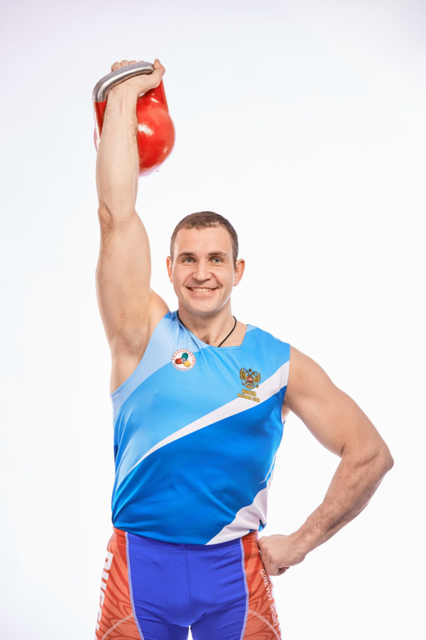
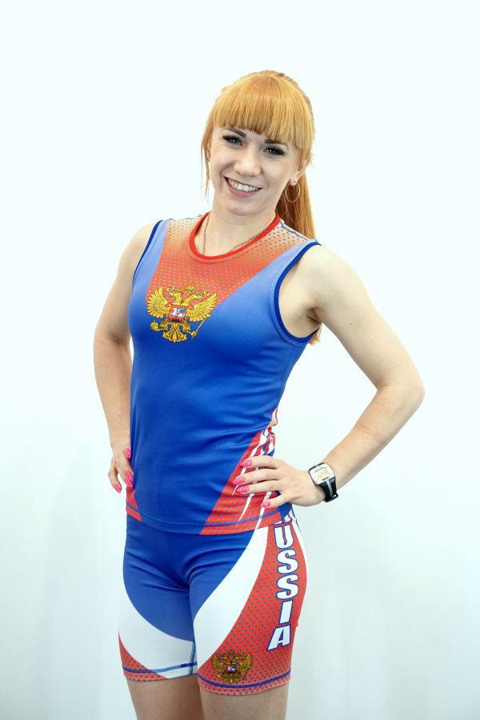
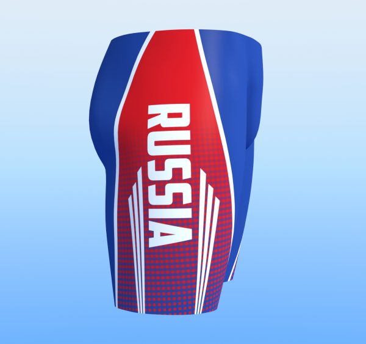
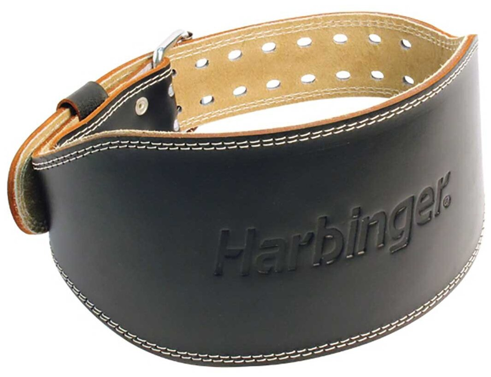
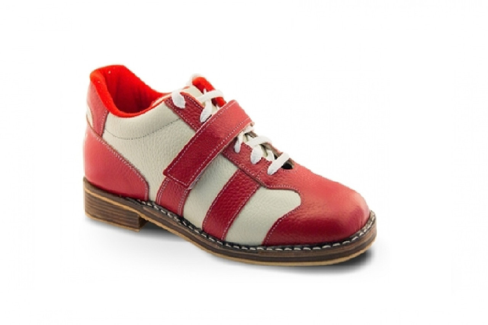

ФОРМА ГИРЕВИКА

В какой форме удобно поднимать гири на тренировках и соревнованиях?
У каждого вида спорта есть своя особенная форма — национальные костюмы.
Экипировка решает целый ряд задач – минимизирует вероятность травмы, упрощает выполнение упражнений, а так же обеспечивает спортсмену красивый,
эстетичный внешний вид. Это особенно актуально, если речь идет о соревнованиях.
В какой-то момент было объявлено, что все спортсмены должны выступать в лосинах и футболках. Это был 2010 год, если мне не изменяет память.
Мне пришла идея создать удобную и красивую форму для сборной России.
Я начал искать фирмы, которые могли бы реализовать этот проект.
Сначала придумали дизайн и пошили только лосины.
Потом, в процессе работы, реализовали еще 3 варианта моих задумок. Пошили уже и футболки, и майки. Получилось не сразу хорошо.
Тестировали разные ткани, разные варианты дизайна и сочетания цветов.
В какой — то момент пришли к нужному варианту соответствующему всем требованиям. Сочетание лайкры и сетки позволило сделать лосины яркими, тянущимися и износостойкими. Футболки создали из плотной хлопковой ткани, а майки наоборот из легкой сетчатой, чтобы было легко и не жарко.
Расскажу о каждом элементе отдельно:
- ФУТБОЛКА
- МАЙКА
- ТРЕЙСЫ
- ПОЯС
- ШТАНГЕКИ
ФУТБОЛКА
 Обязательно должна быть из 100% хлопковой ткани без синтетических вкраплений, для того, чтобы в упражнениях толчок и длинный цикл во время
выталкивания гирь, вся сила мышц ног переходила в гири, а не рассеивалась при скольжении локтей по футболке. Только 100% хлопок способен обеспечить такие характеристики и сохранять локти в правильном положении, отлично впитывает пот и очень приятна к телу.
Почему именно футболка, а не майка? Рукава играют роль защиты кожного покрова плеч. При сбросе гирь, рукава принимают гири, сохраняя кожу плеч. Гири не скользят и не разъезжаются в стороны. Таким образом рукав выполняет защитную и немного тормозящую гири вниз функцию.
Обязательно должна быть из 100% хлопковой ткани без синтетических вкраплений, для того, чтобы в упражнениях толчок и длинный цикл во время
выталкивания гирь, вся сила мышц ног переходила в гири, а не рассеивалась при скольжении локтей по футболке. Только 100% хлопок способен обеспечить такие характеристики и сохранять локти в правильном положении, отлично впитывает пот и очень приятна к телу.
Почему именно футболка, а не майка? Рукава играют роль защиты кожного покрова плеч. При сбросе гирь, рукава принимают гири, сохраняя кожу плеч. Гири не скользят и не разъезжаются в стороны. Таким образом рукав выполняет защитную и немного тормозящую гири вниз функцию.
МАЙКА

Для упражнения рывок особого значения не имеет то, в чем вы будете его выполнять, в футболке или в майке. Но красиво и эстетично выглядит майка, особенно для девушек. Ткань для маек обычно используют синтетическую, для более удобного и качественного нанесения рисунков. Идеальна в этом случае ткань - сетка. Сетка легкая, хорошо отводит влагу, имеет держит форму в течении длительного времени. Синтетика легко стирается и быстро сохнет, тоже большой плюс
ТРЕЙСЫ

Почему трейсы, а не обычные шорты? Трейсы полностью облегают тело, тем самым не создают каких-либо помех при сбросе и замахе гирь. Материал для этой части формы выбирается эластичный, для того чтобы не сковывались движения, нигде ничего не давило. На талии имеется шнурок, чтобы по своему размеру закрепить трейсы и быть уверенным в том, что ничего никуда не сползёт, и не будет мешать во время соревнований.
ПОЯС

ПОЯС-важный атрибут в тренировках гиревика. Основа работы пояса заключается в удержании таза в горизонтальных и фронтальных перемещениях. Пояс должен лежать внизу, на пояснице. Сзади чуть выше середины ягодичной мышцы, спереди внизу самого живота в паховом прорезе.
ШТАНГЕТКИ

ШТАНГЕТКИ - это специализированная спортивная обувь для занятий тяжелой атлетикой. Само их название говорит за себя - оно связано со штангистами, которые стали первыми использовать эту обувь при подъёме штанги.
Но также в штангетках можно заниматься пауэрлифтингом, бодибилдингом, например во время тяжелых приседаний и даже на тренировках по кроссфит тоже используют штангетки.
Однако же бегать в штангетках невозможно по следующим причинам:
- штангетки имеют так называемый каблук 1,5-2 см и протекторный рисунок подошвы, что препятствует скольжению во время работы со штангой
- штангетки достаточно жесткая обувь с выраженным ортопедическим эффектом, это даже помогает формировать правильный свод стопы
- штангетки вдобавок ко всему - тяжелая спортивная обувь с жесткой подошвой и без каких либо эффектов амортизации
Все это, как вы понимаете не даёт возможности атлету бегать в штангетках, но это и не их задача, для бега есть своя специализированная спортивная обувь!